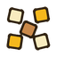

Auto noise and Canvas generatorProcedural generation of shapes from noise and the setup of the silhouette (fade area) on the canvas.
Auto noise is no longer chosen as a mode in the list: it is added from the Auto generator window (after it is added, the mode appears in the list as the current one).
Noise settings
The Noise settings window describes the noise for variations. The main parameters:
- Enable noise - turn the noise on.
- Scale - the noise scale: smaller values give large patches, larger values give fine detail. It is set as a range (a random value is chosen between the two handles; equal bounds fix the scale).
- Noise range - only noise values between the bounds are drawn. A wider range means more pixels; equal bounds draw no noise. Drag the middle between the handles to move the whole range.
- Density %, Falloff, Fade softness, etc.
Auto generator
The Auto generator window configures the procedural variations:
- Overlay noise onto drawing - overlay the noise onto the drawing instead of replacing it.
- Variation - choose a variation; Random seed and Seed; Falloff (0.1-8).
- Noise fade area - the shape of the fade area; drag the edges and corners (or choose the Noise fade area tool). Fade softness and Reset shape.
 Add variation /
Add variation /  Remove selected variation - the set of variations.
Remove selected variation - the set of variations.
If there are no variations the window hints: "Add a variation to configure procedural noise".
Canvas generator
The Canvas generator window shapes the Auto noise silhouette. The settings affect all noise layers; they do not resize the canvas and do not crop your drawing.
- Edge fade areas (pixels) - increase a value to suppress noise along the corresponding edge.
- Corner fade areas (pixels) - cuts the corners diagonally, rounding the silhouette.
- Fade softness - a minimum and a maximum; for each variation the value is chosen from this range. Lower values remove more noise.
- Noise suppression preview - a heat map: 0 - unchanged, 1 - fully suppressed. White lines are the edge limits, yellow lines the corner limits, the labels show the distance in pixels (zero limits are hidden). The preview uses the average softness; the final shape also depends on the noise and the falloff.
- Reset shape - restore the default shape.
If Auto noise is not chosen as the mode, the window offers "Switch to Auto noise".